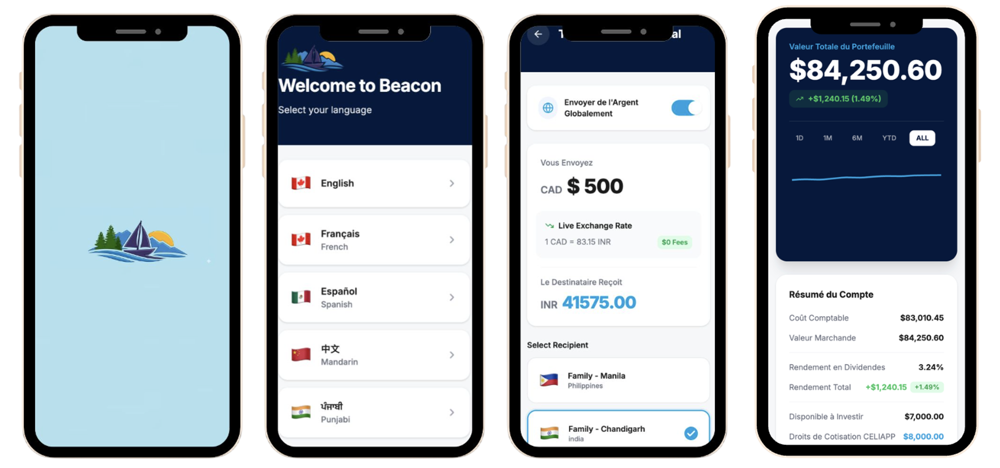

The Competition
TechStrat is UBC BizTech's annual technology strategy competition, bringing together 45 teams to tackle real-world problems at the intersection of technology and business. The format is two-stage: a preliminary round open to all teams, followed by a finals round for the top 12. Each stage involves a different company case, a tight deadline, and a live pitch to industry judges.
🥈 2nd Place · 45 Teams
Round One: TransLink & Coast Mountain Bus Company
The preliminary case challenged teams to advise TransLink and Coast Mountain Bus Company on how to digitally enable their fleet electrification transition. With 22 battery-electric buses in operation and plans to scale to 462 by 2030, the core question was: which digital solutions should TransLink prioritize, and how should they be sequenced and embedded into operations to deliver measurable gains?
The challenge wasn't just about technology. It was about coordinating a system actively running 240 million transit journeys per year while simultaneously changing its infrastructure underneath. As the case put it, this was changing the engine at thirty thousand feet.
The Problem
Diesel-era operations can't work electricity
BEBs require charging windows, power limits, and data-driven scheduling that existing models were not built to handle at scale.
The Stakes
$479M in fleet investment, a looming fiscal cliff
Every dollar invested would need a clear line to service and efficiency outcomes. Scaling electrification on legacy processes would amplify the failures, not just the fleet.
Our Approach
Build the data foundation first
We recommended prioritizing telemetry and charging management as the foundational layer. Without reliable data capture, no advanced analytics or AI system would function correctly.
Key Insight
Capacity comes from coordination, not hardware
Charging uptime, yard management, and block scheduling are interdependent decisions. Value is unlocked when they are treated as one system, not a collection of separate tools.
The prelims pitch video was due at 11:59pm, right after our accounting midterm ran from 7 to 9pm. We had two hours to record and submit. There was no room to coast on the exam stress. We just had to keep going.
Round Two: Harbour Pacific Credit Union
Making the top 12 meant a 24-hour sprint on a completely new case: Harbour Pacific Credit Union, a fictional BC institution running a 33-year-old COBOL mainframe core banking system called APEX-7, well past its designed lifespan of 15 years. The case framed it perfectly: this was changing the engine at thirty thousand feet.
The institution faced three converging pressures: a regulatory review expected within 12–18 months, fintech competitors eroding the younger member base, and a maintenance cost trajectory heading toward $8.7M annually within six years. The question wasn't whether to act. It was how.
The Solution: Rebuild, Reclaim, Reinforce
We recommended a three-pillar modernization strategy: Rebuild, Reclaim, Reinforce. Rebuild creates the technical foundation. Reclaim turns that foundation into a visible win for members. Reinforce makes sure the institution can govern and sustain the change long after the project closes.
R
Rebuild
Migrate from APEX-7 to Meridian CoReady via a dual-mode interface: Core Mode preserves familiar APEX-aligned workflows for staff, Smart Mode unlocks real-time APIs. Both run through a shared API layer so Meridian is always the single source of truth.
R
Reclaim
Reposition HPCU as members' primary daily financial interface through Beacon, a real-time multilingual mobile banking app. Built on the new core, Beacon enables instant transfers, international remittances, and multilingual support to win back the daily relationship fintechs had taken.
R
Reinforce
Create a Digital Governance Officer role to act as liaison between HPCU leadership and the Board of Directors, translating technical complexity into governance language. Paired with an annual Internal Tech Health Assessment to track regulatory changes and risk.
Key Deliverable: Beacon
The centrepiece recommendation was Beacon, a multilingual mobile banking app built for Harbour Pacific's diverse member base. Supporting English, French, Spanish, Mandarin, and Punjabi, Beacon enables members to send money internationally, manage portfolios, and access all credit union services in one interface. We presented full UI mockups alongside a concrete implementation roadmap and vendor recommendation, weighing the trade-offs across Meridian Core Systems, NorthAxis Financial, and Continuum Banking Solutions.
Strategic Recommendation
Phase 2 CBS Modernization via Meridian Core Systems (CoReady): a phased strangler-fig migration that eliminates COBOL dependency without service disruption, paired with Beacon as the member-facing proof point.
- Elimination of COBOL talent dependency within a 36–48 month migration window
- Real-Time Rail compatibility unlocked post-migration, addressing the core competitive gap
- Beacon NPS tracked against retention of members under 45 as north star metric
- Regulatory review satisfied through documented phase gates and transition risk management plan
My Contribution
My primary deliverable for the finals was the UI mockups for both Rebuild and Reclaim. Designing these meant understanding not just what the interfaces needed to do, but why each design decision served the strategy.
Rebuild — Meridian dual-mode interface
Core Mode mirrors APEX-7 workflows so staff aren't hit with retraining shock mid-migration. Smart Mode exposes real-time API workflows for roles that need it. Both modes route through the same governed API layer to Meridian, so the single source of financial truth is never compromised.
Internal system walkthrough — Core Mode and Smart Mode
Reclaim — Beacon app mockups
Designed to win back the daily financial relationship from fintechs. Multilingual onboarding (English, French, Spanish, Mandarin, Punjabi), real-time international transfers with live exchange rates, and a portfolio dashboard. The design had to feel trustworthy and accessible to every segment of HPCU's membership, from long-term BC residents to recently arrived newcomers navigating a new financial system.

Beacon — language onboarding, international transfer (French UI), portfolio dashboard (French UI)
Reflection
What I Learned
Credit unions aren't just smaller banks. They're fundamentally different institutions built on community trust. Understanding that distinction changed how we framed every recommendation. The Triple R framework wasn't about modernizing for its own sake. It was about finding the path that didn't force Harbour Pacific to choose between who they were and who they needed to become. That tension is the whole problem, and the best strategy holds both.
On Time and Pressure
The prelims submission landed two hours after an accounting midterm. The finals pitch was the day before a finance midterm. What I learned is that you can't defer what matters just because something else is hard. The stress doesn't go away. You just have to move through it anyway. Learning to do everything at once isn't really about time management. It's about deciding that both things are worth doing and not letting one become an excuse for the other.
Grateful For
I'm very grateful I was asked to compete in this competition, despite all the midterms that were happening at the time. Being able to work with people who had more casing experience than I do forced me to raise my floor: the rigour of analysis, the precision of language, the confidence of recommendation. We lost a teammate along the way, and we kept going anyway and I think that made all the difference. That made the 2nd place finish mean something beyond the result itself, knowing that our team was able to stick together and push throughout regardless of the obstacles we faced.